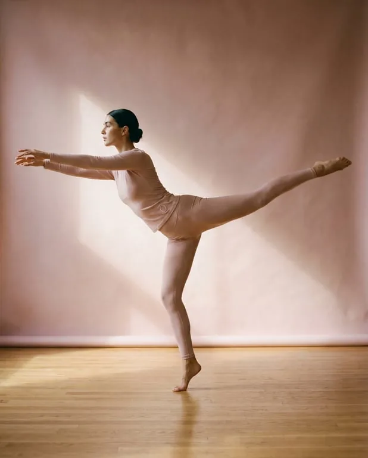
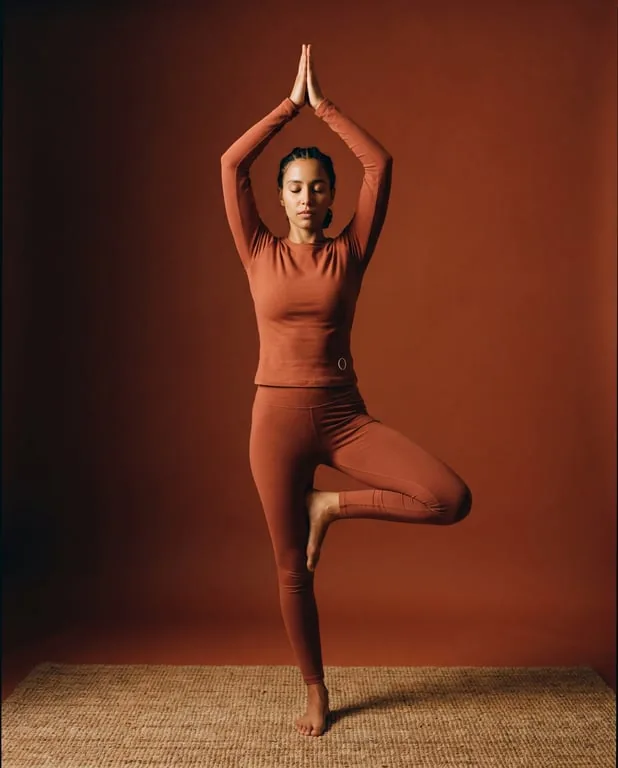
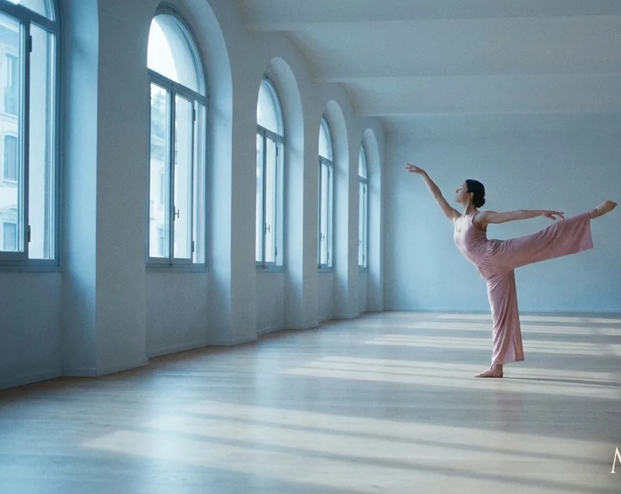

לזוז לאט, בכוונה.
פילאטיס, יוגה ועבודת רצפה בחדר עם חלונות גבוהים ושנים עשר מזרנים. כיתות קטנות, אותם מורים בכל שבוע.
להירשם לשיעור ראשון
12 מזרניםכדי שהמורה תראה את כולם
שיעורים
ארבעה סוגי שיעור, קצב אחד.
- 01
פילאטיס מזרן
כוח מהמרכז החוצה, בתנועות קטנות ומדויקות.
א׳, ג׳, ה׳ 7:00 - 02
זרימה איטית
יוגה שמחזיקה כל תנוחה חמש נשימות לפני שממשיכים.
ב׳, ד׳ 19:00 - 03
עבודת רצפה
להתגלגל, לזחול ולשכב, כדי לזוז שוב בלי כאב.
ג׳ 18:00 - 04
נשימה
שלושים דקות של נשימה ושקט לפני העבודה.
ו׳ 8:00



אף אחד כאן לא מאחר, לא מפגר ולא עושה את זה לא נכון. נכנסים, נשכבים, ומתחילים מאיפה שהגוף נמצא היום.נועה, שמלמדת את שיעורי הבוקר
השיעור הראשון עלינו.
לא צריך להביא כלום חוץ מבגדים נוחים. מזרנים, קוביות ומים יש כאן.
- ראשון עד חמישי
- 7:00 עד 21:00
- שישי
- 8:00 עד 13:00